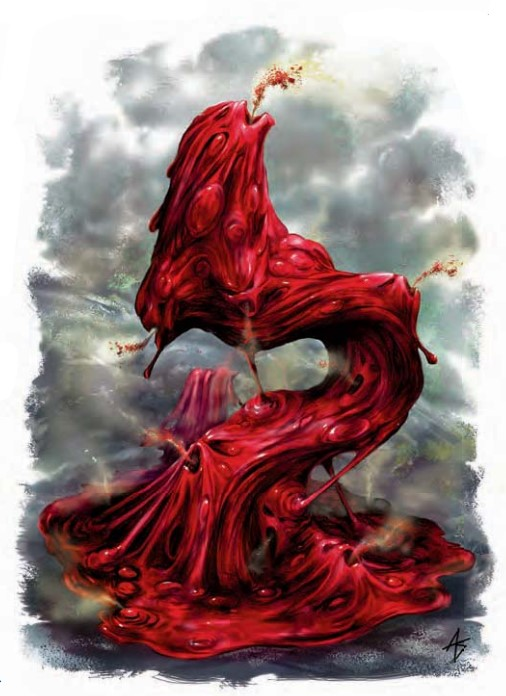

这一池令人作呕的血液中偶尔会显现出一张饱受折磨而扭曲的脸。它沸腾着，冒着气泡，散发出硫磺的臭味，同时向你伸出沾满血污的伪足。
| 资料栏位 | 炎血泥怪（Bloodfire Ooze） 超大型泥型怪物（火系） |
|---|---|
| 生命骰 | 12d10+84（150HP） |
| 先攻 | +1 |
| 速度 | 30尺 (6格) |
| 防御等级 | 16 (-2体型，+1 敏捷，+7天生)，接触9，措手不及15 |
| 基本攻击/擒抱 | +9/+24 |
| 攻击 | 近战 挥击+14(1D8+10附加2D6火焰) |
| 全力攻击 | 近战 挥击+14(1D8+10附加2D6火焰) |
| 面宽/触及 | 15尺/ 10尺 |
| 特殊攻击 | 燃烧之血，火焰爆发 |
| 特殊能力 | 目盲，盲视60尺，快速医疗 5，火焰免疫，泥型怪物免疫，SR 19，寒冷易伤，火焰法术强效，泥型怪物特性；抗力：强酸 10，电击 10 |
| 豁免 | 强韧+11，反射+5，意志+4 |
| 属性 | 力量24，敏捷13，体质24，智力 -，感知11，魅力4 |
| 技能 | 聆听 +0 |
| 专长 | ― |
| 环境 | 见后文（未翻译） |
| 组织 | 见后文（未翻译） |
| 挑战等级 | 7 |
| 宝物 | 无 |
| 阵营 | 总是中立邪恶 |
| 进化 | 13-24HD (超大型)；25-48HD（巨型） |
| 等级调整 | ― |
炎血泥怪是由大量的无辜者血液与恶魔的脓血进行混合而产生的不洁产物。它只能隐约地感知到周围，同时利用自己的高热燃尽一切。
战斗作为无心智生物，炎血泥怪并不会使用除了"碾"与"烧"之外的任何战术。智慧生物经常创造出炎血泥怪作为守卫，并利用其能力增强他们自身的法术能力。邪恶的创造者们尤其喜欢这些泥怪，因为它们除了提供物理防御之外，还可以在其附近提供火焰法术强效能力。可以使用火焰法术或者能力的邪恶异界生物同样寻找或试图创造这些生物。
燃烧之血（Burning Blood）（Ex）：炎血泥怪的身体会发出惊人的热量。任何用身体或武器攻击到，或者擒抱住炎血泥怪的生物自动受到2D6点火焰伤害。一个生物每轮只会受到一次此能力造成的伤害。
火焰爆发（Flame Burst）（Su）：炎血泥怪可以每轮一次以一个标准动作使用火焰爆发。在10尺范围内的任何生物必须成功通过一个DC23的反射检定，否则将受到6D6点火焰伤害。豁免成功则伤害减半。豁免DC基于体质。
火焰法术强效（Empower Fire Spells）（Su）：在炎血泥怪周围60尺范围内施放的，所有带有火描述符的法术或类法术能力自动强效，如同受到法术强效专长影响一般。只有施法者与法术的原始目标都在该效果的影响范围内时，该效果才会触发。
超大型异界生物（增强泥型怪物，火系）
描述
| 资料栏位 | 凋萎炎血怪 超大型异界生物（增强泥型怪物，火系） |
|---|---|
| 生命骰 | 12d10+96（162HP） |
| 先攻 | +1 |
| 速度 | 30尺 (6格) |
| 防御等级 | 17 (-2体型，+1 敏捷，+8天生)，接触9，措手不及16 |
| 基本攻击/擒抱 | +9/ +24 |
| 攻击 | 近战 挥击+15(2D6+10/19-20附加2D6火焰) |
| 全力攻击 | 近战 挥击+15(2D6+10/19-20附加2D6火焰) |
| 面宽/触及 | 15尺/ 10尺 |
| 特殊攻击 | 燃烧之血，魔法打击，克敌机先1次/天，火焰爆发，变换形貌，负能量射线 |
| 特殊能力 | 目盲，盲视60尺，负能量光环（10尺），快速医疗 5，寒冷易伤，SR 22（对负能量27）；抗力：强酸 15，电击 15；免疫：火焰，凝视攻击，幻象，视觉效果，火焰法术强效，适应负能量 |
| 豁免 | 强韧+12，反射+5，意志+4 |
| 属性 | 力量24，敏捷13，体质26，智力 -，感知11，魅力6 |
| 技能 | 脱逃 +16，躲藏 +8，聆听 +0，潜行 +16，察言观色 +15 |
| 专长 | 能力专攻（火焰爆发），精通重击（挥击），强化天生防御，强化天生攻击 |
| 环境 | 见后文（未翻译） |
| 组织 | 见后文（未翻译） |
| 挑战等级 | 12 |
| 宝物 | 无 |
| 阵营 | 中立邪恶 |
| 进化 | 13-24HD (超大型)；25-48HD（巨型） |
| 等级调整 | ― |
经过精确的体液混合或者跨位面生物的改造，炎血泥怪被塑造成了更加异化而骇人的生物。凋萎炎血怪是通过添加来自完美奥术的伪自然模板与来自位面手册的熵力生物模板而创造成的。
战斗负能量光环（Su）：在凋萎炎血怪10尺范围之内的所有活体生物每轮失去1点生命值。免疫负能量的角色与其他熵力生物不会受此效果影响。凋萎炎血怪可以以一个标准动作压制此光环，但此光环每停止激活1分钟，凋萎炎血怪即受到1点力量伤害。
燃烧之血（Ex）：同标准炎血泥怪。
克敌机先（Su）：同克敌机先法术。
变换形貌（Su）：以一个标准动作，凋萎炎血怪可以使自己的外貌变得更为丑陋骇人，因此对凋萎炎血怪的攻击掷骰将有-1士气减值。
火焰爆发（Su）：同标准炎血泥怪，反射DC26。
负能量射线（Su）：每1D4轮一次；射程60尺；远距接触攻击；1D4-2负能量伤害。此攻击伤害活体生物而治疗不死生物。
火焰法术强效（Su）：同标准炎血泥怪。
适应负能量（Ex）：凋萎炎血怪不会因处在负能量主导的环境中而失去生命值或是做强韧豁免。
在知识（地下城）上有级数的人物可以更多地了解炎血泥怪。当人物成功通过技能检定时，以下知识将被揭示，其中包括了更低DC的信息。
| 知识（地下城） | 结果 |
|---|---|
| DC 17 | 这一坨冒烟的血块是炎血泥怪。这个结果揭示了其所有泥型怪物特性。 |
| DC 22 | 炎血泥怪燃烧着的身躯会对任何接触它的生物造成伤害。它与火焰的密切联系增强了在它附近施放的火焰法术的能力。 |
| DC 27 | 炎血泥怪是通过将魔族精华与无辜者血液加以混合的，难以言喻的仪式创造出来的。 |
| DC 32 | 火系生物与邪恶创造者通常让炎血泥怪留在他们周围，以此增强他们自身的火焰能力。 |
作为无心智的生物，炎血泥怪除了"压倒"和"焚烧"之外不会采用任何战术。智慧生物常常创造它们作为守卫，并增强自身的魔法能力。邪恶的塑能师尤其偏爱这些泥怪，因为它们在提供物理防御的同时，还能强化附近施展的火系法术。能够使用火系法术或能力的邪恶异界生物也会寻找或创造这种生物。
遭遇范例炎血泥怪常常与施法者或更强大的火系生物一同出现。
守卫（EL 10）：卡拉萨姆・阿拉纳尔（Kalamaz Al'Anar）是一名躲藏在物质位面的火巨灵，他在自己占据的一个小型洞穴系统中养着两只炎血泥怪。这名火巨灵正对周边区域进行劫掠，抢夺奴隶与物资。另一种情况：卡拉萨姆与两只泥怪作为雇佣兵，守卫着一座大型地下城中的某片区域。
火力小队（EL 12）：梅尔泽尔（Mel-zeer）是一名名声可怖的贵族火蜥蜴，率领着一支由四名普通火蜥蜴和一只炎血泥怪组成的袭击队。这些生物冲入PC们所在的定居点时，空气中满是火焰。他们试图快速劫掠，然后在熊熊火焰的掩护下逃离。
生态炎血怪的必须通过扭曲的仪式才能诞生，他们在自然界中根本不存在。炎血怪吞噬的血液越多，其体积就越大；善良生物的血液能提供更优质的营养。巨型以及更大的炎血怪需要吞噬数百生物的血液才能形成。炎血怪从诞生之日起就一直在盲目的寻求更多营养。
环境炎血怪存在于邪恶的神庙（无论是废弃与否）、邪恶施法者或强大火元素生物的领地，它们有时也会在地下的一部分区域游荡，但很少存能够长时间在地面上活动且活下来的――它们制造的火焰会迅速引起人们的注意。炎血怪通常会留在生产他们的巨大坩锅内或浅坑之中潜伏等候。
典型特征炎血怪看起来就像一团巨大的，活生生燃烧着的血液组成的庞然大物。当这个生物移动时，一个个痛苦灵魂的面容短暂出现在液体表面，随后消失。一股带有硫磺味的浓烟不断从流淌的血水中升起。一个超大型泥怪边长约15英尺，重量约8000磅，但也有更大的个体被观察到过。
阵营说明尽管这些无意识的泥怪是由邪恶行为所催生的，但它们始终属于中立邪恶阵营。
对于玩家角色制造一只炎血怪需要进行一场极其恐怖的仪式。此仪式需要至少100个善良或中立类人生物的血液，和一只具有10或者更高hd恶魔的所有体液。这些材料成分必须在刻有特殊符文的巨型坩锅中混合，坩锅价值至少3000金币。整个仪式需要24小时才能完成，在此期间施法者不能做任何事情，除了偶尔的休息――战斗，施法或进行其他艰巨的任务都会破坏这个仪式，必须从头重新开始。整个仪式必须在邪居术作用的区域内进行，且创造者需要花费500经验。炎血怪服从其创造者的简单命令，比如"守护这座神庙"或者"除我以外任何进入这里的人。"，但是它不能执行更复杂的指令。指挥一个炎血怪需要他的创造者位于至少30尺内。
炎血泥怪在艾伯伦炎血泥怪常见于恶魔荒原，它们是拉刹什人及其他邪恶存在进行可怖仪式的产物。冒险者们还报告称，在夏恩地下的久被遗忘的神殿以及希恩德瑞克的独眼巨人废墟中，也有炎血泥怪守护的踪迹。
炎血泥怪在费伦炎血泥怪在塞尔最为常见。红袍巫师创造它们来守卫实验室、神殿以及其他重要地点。